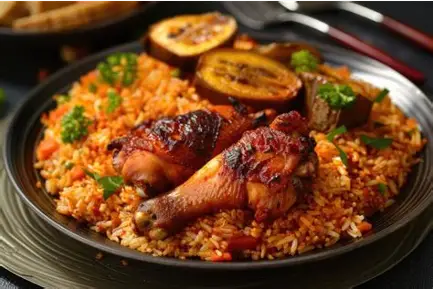

Jollof Rice
A delicious and flavourful Nigerian rice dish cooked with tomatoes, peppers and spices.
View Recipe →AUTHENTIC NIGERIAN FLAVOURS
Discover the rich flavours, traditional dishes, and delicious recipes that make Nigerian cuisine special.
Explore Our RecipesEXPLORE OUR CUISINE
Discover some of Nigeria's most loved and delicious traditional delicacies.

A delicious and flavourful Nigerian rice dish cooked with tomatoes, peppers and spices.
View Recipe →
Sweet and golden plantain slices fried until beautifully crispy on the outside.
View Recipe →
A traditional Nigerian favourite combining smooth amala with delicious ewedu soup.
View Recipe →
Soft and smooth pounded yam served with rich and delicious egusi soup.
View Recipe →
Colourful Nigerian fried rice served with deliciously seasoned chicken.
View Recipe →
Soft steamed bean pudding paired with smooth and comforting Nigerian pap.
View Recipe →